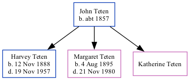

John J Teten c1857 -
[ Home ] | [ Surnames Index ] | [ Family History ] was born in Germany c. 18571. He had 3 children, Harvey Henry, Margaret and Katherine Elizabeth. In 1920, he was living in Nebraska Ward 4, Otoe, Nebraska1.
Children
- Harvey Henry was born on Nov 12, 1888
- Margaret was born on Aug 4, 1895
- Katherine Elizabeth
Citations
- 1920 United States Federal Census Ancestry.com Operations Inc (Age: 63; Marital Status: Widowed; Marital Status: Widow; Relation to Head of House: Head)
Family Tree
Data (GEDCOM) maintained by Jay Weston Hannah, Omaha, Nebraska, USA.
Website generated by ged2site. Last updated on Jun 18, 2024.